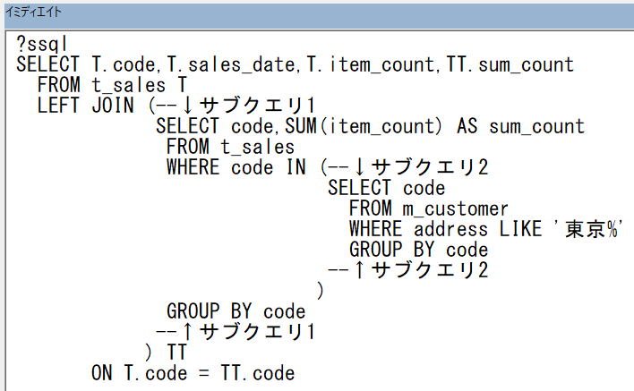

サブクエリのネストとSQLコメント&整形
エクセルVBAでデータベースを扱うためのSQL入門です。
前回は、サブクエリの基本的な使い方を説明しました。
FROM句で使って他のテーブルとJOINする書き方、WHERE句のINに指定する書き方等々。
さらに、複雑化したSQLへのコメントの書き方およびSQLの整形についても解説します。
サブクエリのネスト
サブクエリのネストです。
SELECT T.code,T.sales_date,T.item_count,TT.sum_count
FROM t_sales T
LEFT JOIN (SELECT code,SUM(item_count) AS sum_count
FROM t_sales
WHERE code IN (SELECT code
FROM m_customer
WHERE address LIKE '東京%'
GROUP BY code)
GROUP BY code) TT
ON T.code = TT.code何をしているかというと、
・そのcodeのite_countの合計を取得 ・・・ JOIN句の中
・上記item_countの合計をカラム出力 ・・・ 全体
つまり、東京で始ま行にのみ合計数が出力されます。
このようなサブクエリの組み方や整形について以下で説明します。
サブクエリのネストの組み方
まずサブクエリを作成します。
-- サブクエリ1
SELECT code,SUM(item_count) AS sum_count
FROM t_sales
WHERE code IN ('001','002') --'001','002'は仮
GROUP BY code
-- サブクエリ2
SELECT code
FROM m_customer
WHERE address LIKE '東京%'
GROUP BY code次にSQL全体を組みます。
SELECT T.code,T.sales_date,T.item_count,TT.sum_count
FROM t_sales T
LEFT JOIN (サブクエリ1) TT
ON T.code = TT.codeSELECT T.code,T.sales_date,T.item_count,TT.sum_count
FROM t_sales T
LEFT JOIN (SELECT code,SUM(item_count) AS sum_count
FROM t_sales
WHERE code IN ('001','002') --'001','002'は仮
GROUP BY code) TT
ON T.code = TT.code'001','002'をサブクエリ2で置き換えて、
↓
SELECT T.code,T.sales_date,T.item_count,TT.sum_count
FROM t_sales T
LEFT JOIN (--↓サブクエリ1
SELECT code,SUM(item_count) AS sum_count
FROM t_sales
WHERE code IN (--↓サブクエリ2
SELECT code
FROM m_customer
WHERE address LIKE '東京%'
GROUP BY code
--↑サブクエリ2
)
GROUP BY code
--↑サブクエリ1
) TT
ON T.code = TT.code
出力結果を良く確認して完成されます。
エクセルのシートでの関数のネストと同じ要領です。
ただし、ネストしすぎたり多くのサブクエリを使用すると、
SQLが複雑となり、後々の修正が大変になってしまいます。
さらなる変更に対応するために、SQLをリファクタリングすることも必要になる場合もあります。
SQLのコメントについて
-- コメント
行の途中だけでもコメントアウトできますし、複数行をまとめてコメントアウトもできます。
SELECT カラム /* コメント */ FROM テーブル
WHERE /* コメント・・・
・・・コメント */
GROUP BY ・・・
SQLの整形
コメントを追加している点と、閉じ括弧の位置をずらしています。
特に閉じ括弧の位置は、
開き括弧の位置に合わせる方法と、一番後ろに入れる方法があります。
どちらが良いという事もなく、人によって好みが分かれるとところでしょう。
SELECT T.code,T.sales_date,T.item_count,TT.sum_count
FROM t_sales T
LEFT JOIN (
サブクエリ) TT
ON T.code = TT.codeSELECT T.code,T.sales_date,T.item_count,TT.sum_count
FROM t_sales T
LEFT JOIN (
サブクエリ
) TT
ON T.code = TT.codeGUIツールを使うと、
SQLが見やすく色分けされたり、サブクエリのネストが視覚化されたりするので、より作成しやすいはずです。
※DB Browser for SQLite
また、WEBや書籍で見た時に見やすいと思ったら、それを真似すると良いでしょう。
文字列をイミディエイトで取得して、DBのGUIツール等に貼り付けた時に見やすくなり、効率が良くなります。
sSql = sSql & "SELECT T.code,T.sales_date,T.item_count,TT.sum_count" & vbCrLf
sSql = sSql & " FROM t_sales T" & vbCrLf
sSql = sSql & " LEFT JOIN (--↓サブクエリ1" & vbCrLf
sSql = sSql & " SELECT code,SUM(item_count) AS sum_count" & vbCrLf
sSql = sSql & " FROM t_sales" & vbCrLf
sSql = sSql & " WHERE code IN (--↓サブクエリ2" & vbCrLf
sSql = sSql & " SELECT code" & vbCrLf
sSql = sSql & " FROM m_customer" & vbCrLf
sSql = sSql & " WHERE address LIKE '東京%'" & vbCrLf
sSql = sSql & " GROUP BY code" & vbCrLf
sSql = sSql & " --↑サブクエリ2" & vbCrLf
sSql = sSql & " )" & vbCrLf
sSql = sSql & " GROUP BY code" & vbCrLf
sSql = sSql & " --↑サブクエリ1" & vbCrLf
sSql = sSql & " ) TT" & vbCrLf
sSql = sSql & " ON T.code = TT.code" & vbCrLf

データの挿入：バルクインサート
サブクエリのネストとSQLコメント&整形の最後に
SQLのコメントの書き方や、SQLの整形について解説しました。
ただし、それとともにSQLはより複雑化していきます。
SQLを付けたし付けたしで拡張していった結果、SQLがサブクエリだらけになってしまうこともあります。
それがWITH句、共通テーブル式と呼ばれるもので、同じようなサブクエリはWITH句を使用して共通化することができます。
次回は、このWITH句について解説します。
同じテーマ「SQL入門」の記事
データの更新（UPDATE）
データの削除（DELETE）
他のテーブルのデータで追加/更新/削除
インデックスを作成して高速化（CREATE INDEX）
トランザクション処理
VBAクラスの全コード：トランザクション処理
サブクエリ（副問合せ）
サブクエリのネストとSQLコメント&整形
WITH句（共通テーブル式）
取得行数を限定するLIMIT句
分析関数（OVER句,WINDOW句）
新着記事NEW ・・・新着記事一覧を見る
VBA100本ノック 100本目：WEBから100本ノックのリストを取得｜VBA練習問題（3月3日）
VBA100本ノック 99本目：自動席替え（行列と前後左右が全て違うように）｜VBA練習問題（3月2日）
VBA100本ノック 98本目：席替えルールが守られているか確認｜VBA練習問題（3月1日）
VBA100本ノック 97本目：Accessデータを取得（グループ集計）｜VBA練習問題（2月27日）
VBA100本ノック 96本目：Accessデータを取得（マスタ結合&抽出）｜VBA練習問題（2月26日）
VBA100本ノック 95本目：図形のテキストを検索するフォーム作成｜VBA練習問題（2月24日）
VBA100本ノック 94本目：表範囲からHTMLのtableタグを作成｜VBA練習問題（2月23日）
VBA100本ノック 93本目：複数ブックを連結して再分割｜VBA練習問題（2月22日）
VBA100本ノック 92本目：セルの色を16進で返す関数｜VBA練習問題（2月20日）
VBA100本ノック 91本目：時間計算（残業時間の月間合計）｜VBA練習問題（2月19日）
アクセスランキング ・・・ ランキング一覧を見る
1.最終行の取得（End,Rows.Count）｜VBA入門
2.RangeとCellsの使い方｜VBA入門
3.変数宣言のDimとデータ型｜VBA入門
4.マクロって何？VBAって何？｜VBA入門
5.Range以外の指定方法（Cells,Rows,Columns）｜VBA入門
6.セルのコピー&値の貼り付け（PasteSpecial）｜VBA入門
7.繰り返し処理（For Next)｜VBA入門
8.セルに文字を入れるとは（Range,Value）｜VBA入門
9.マクロはどこに書くの（VBEの起動）｜VBA入門
10.とにかく書いてみよう（Sub,End Sub）｜VBA入門
このサイトがお役に立ちましたら「シェア」「Bookmark」をお願いいたします。
記述には細心の注意をしたつもりですが、
間違いやご指摘がありましたら、「お問い合わせ」からお知らせいただけると幸いです。
掲載のVBAコードは動作を保証するものではなく、あくまでVBA学習のサンプルとして掲載しています。
掲載のVBAコードは自己責任でご使用ください。万一データ破損等の損害が発生しても責任は負いません。